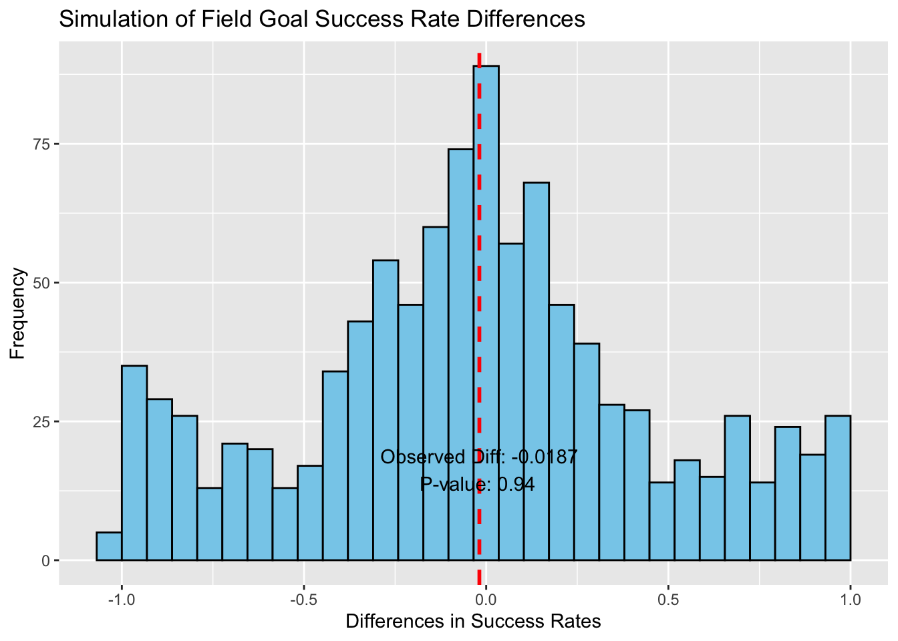
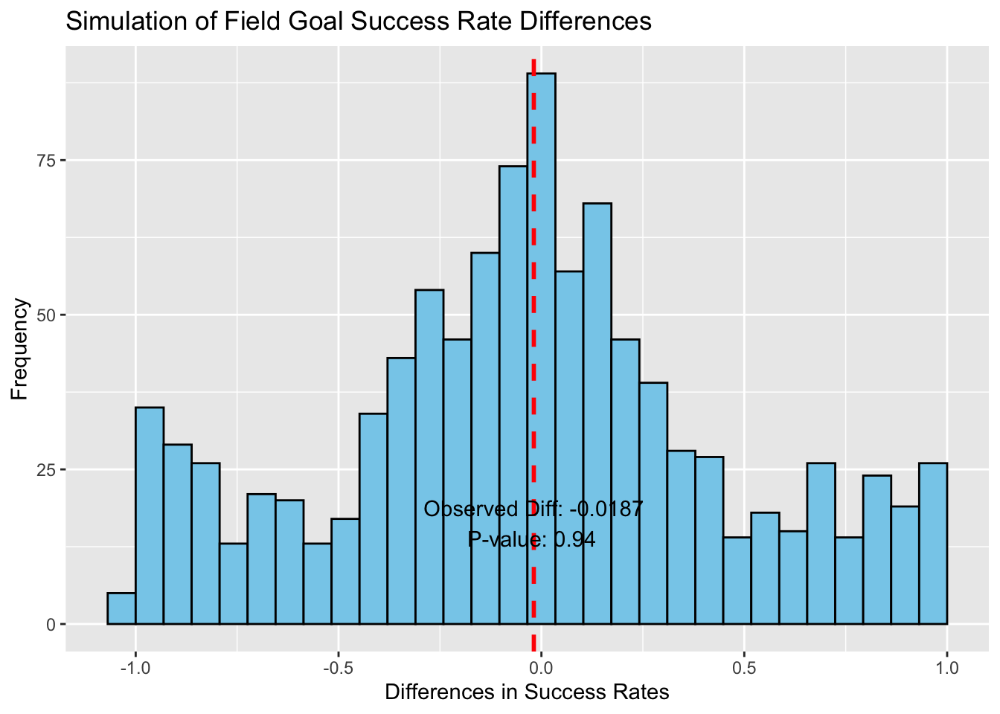
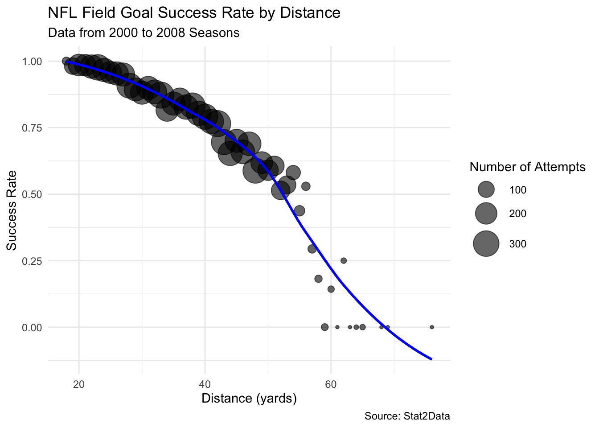

Warning: Using `size` aesthetic for lines was deprecated in ggplot2 3.4.0.
ℹ Please use `linewidth` instead.
For this project, I explored the FGByDistance dataset, which includes results of NFL field goal attempts by distance. This dataset provides a unique insight into how the distance of a field goal attempt influences its success rate, offering valuable data for teams to strategize their play.
The objective of this study is to simulate field goal success rates under the null hypothesis that distance does not affect success rates. This involves randomizing distance categories and observing how these simulated conditions compare with actual data.
Warning: Using `size` aesthetic for lines was deprecated in ggplot2 3.4.0.
ℹ Please use `linewidth` instead.
As observed, the p-value calculated from our simulation suggests that the difference in field goal success rates by distance can (or cannot) be attributed to random variation. If the p-value is less than 0.05, we consider the effect of distance on success rates to be statistically significant. This analysis helps in understanding how distance might affect a team’s decision-making process regarding field goal attempts.
Row Dist N Makes
Min. : 1.0 Min. :18.00 Min. : 1.0 Min. : 0.0
1st Qu.:13.5 1st Qu.:30.50 1st Qu.: 17.0 1st Qu.: 11.5
Median :26.0 Median :43.00 Median :223.0 Median :173.0
Mean :26.0 Mean :43.24 Mean :167.1 Mean :134.3
3rd Qu.:38.5 3rd Qu.:55.50 3rd Qu.:255.5 3rd Qu.:215.5
Max. :51.0 Max. :76.00 Max. :315.0 Max. :291.0
PropMakes Blocked PropBlocked
Min. :0.0000 Min. : 0.000 Min. :0.000000
1st Qu.:0.4758 1st Qu.: 1.000 1st Qu.:0.004176
Median :0.7004 Median : 3.000 Median :0.018519
Mean :0.6205 Mean : 3.843 Mean :0.028516
3rd Qu.:0.8889 3rd Qu.: 6.000 3rd Qu.:0.029536
Max. :1.0000 Max. :15.000 Max. :0.285714 'data.frame': 51 obs. of 7 variables:
$ Row : int 1 2 3 4 5 6 7 8 9 10 ...
$ Dist : int 18 19 20 21 22 23 24 25 26 27 ...
$ N : int 15 107 204 197 244 298 241 211 237 238 ...
$ Makes : int 15 105 201 194 239 291 233 202 226 226 ...
$ PropMakes : num 1 0.981 0.985 0.985 0.98 ...
$ Blocked : int 0 1 1 0 2 2 1 5 1 1 ...
$ PropBlocked: num 0 0.00935 0.0049 0 0.0082 ...Warning: The following aesthetics were dropped during statistical transformation: size
ℹ This can happen when ggplot fails to infer the correct grouping structure in
the data.
ℹ Did you forget to specify a `group` aesthetic or to convert a numerical
variable into a factor?
The visualization features a scatter plot with attempt distances on the x-axis and success rates on the y-axis, with each point representing a distance category from the FGByDistance dataset. A fitted curve illustrates the overall trend of decreasing success rates with increasing distances. A series of simulated data points are overlayed to show potential variance in success rates under randomized conditions, highlighting the impact of distance on field goal success. The plot includes annotations for key distances where success rates markedly decline, providing insights into strategic considerations for NFL teams.
This study and its visualization offer insights into how strategic decisions regarding field goal attempts could be optimized based on distance, reflecting on the physical and psychological factors that influence kicker performance in the NFL. Through this analysis, we demonstrate the importance of considering distance in game strategies and the potential for teams to enhance their decision-making processes in critical moments.